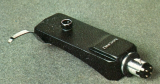
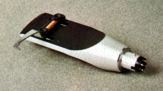
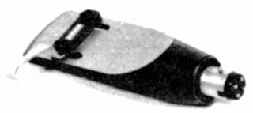
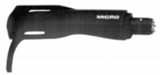
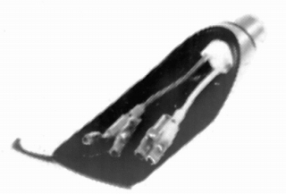
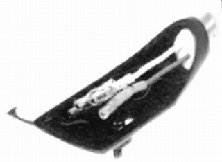
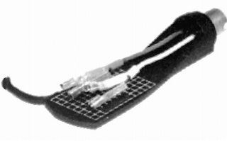
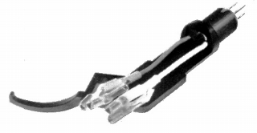
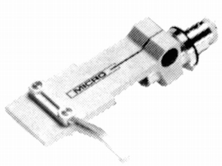
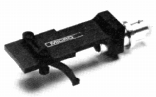

ヘッドシェル
H-77N

■価格 1,200円
■重量
■備考 アルミダイキャスト製
スライドベース付きでオーバーハングの微調整可能
H-202

■価格 1,900円
■重量 9.7g
■備考 アルミダイキャスト加工
端子は硬質金メッキ処理
H-303は色違いバージョン
H-303

■価格 1,700円
■重量 9.7g
■備考 アルミダイキャスト加工
端子は硬質金メッキ処理
H-202は色違いバージョン
H-505

■価格 2,300円
■重量
■備考 マグネシウム合金製
Xシリーズ
マイクロ後期のシェルは型番末尾に「X」がつく製品で、
1970年代末の同社の直結思想に元ずく製品。
リード線がアーム側のコネクターに直結されている。
したがってリード線の交換は不可能。
なおリード線は無酸素銅の同軸ケーブルを使用している。
H-202X

■価格 2,100円
■重量 10.0g(取付ネジ含まず）
■備考 アルミダイキャスト製
H-303X

■価格 1,900円
■重量 10.0g(取付ネジ含まず）
■備考 アルミダイキャスト製
H-505X

■価格 2,500円
■重量 7.5g(取付ネジ含まず）
■備考 マグネシウム合金製
H-707X

■価格 1,500円
■重量 4g
■備考 MA-707X専用ヘッドシェル
同軸シールドリード線使用
H-808X

■価格 4,500円
■重量 12g
■備考 アルミ削出し
六角穴ボルトにより、オーバーハング、
針先垂直調整可能
なお同価格でブラック仕上げのH-808XBあり
